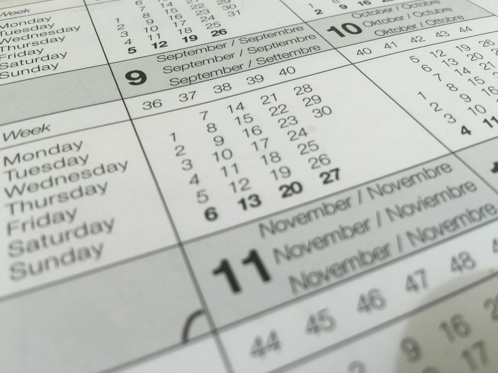
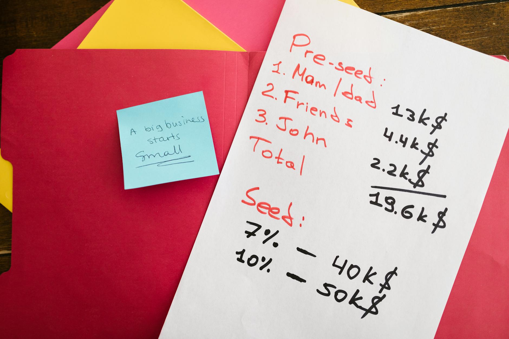

TL;DR
For beginners, invest consistently in ETFs like VTI with monthly contributions of $300. Avoid market timing and consider fees to maximize your returns.
What Should Beginners Start Investing In?
If you're a beginner looking to invest consistently, an effective strategy is to contribute to ETFs such as the Vanguard Total Stock Market ETF (VTI).
By setting a monthly contribution of $300, you can not only build a diversified portfolio but also take advantage of market fluctuations with a long-term perspective.
Instead of attempting to time the market, focus on dollar-cost averaging—investing a fixed amount each month regardless of price
Why Many New Investors Miss the Mark

Why Many New Investors Miss the Mark
One critical misunderstanding for new investors involves the belief that they must time market entry perfectly. This misconception can lead to missed opportunities, especially during market dips when prices are more favorable.
For instance, consider an investor who is keen to buy into a popular ETF, say one tracking the S&P 500. If they wait for a specific price point—let's say they believe the ETF will drop from $400 to $380—they may miss out entirely if the market trends upwards or stays stable. Research shows that attempting to time the market can result in missing significant gains; for example, an investor who sat on the sidelines in 2020 missed a robust recovery that saw the S&P 500 gain over 70% from its March lows.
Additionally, many beginners experience anxiety over market fluctuations. For instance, a new investor might buy shares at $400, only to see the price dip to $380 a week later, prompting them to panic and sell at a loss.
This knee-jerk reaction not only affects their current investment but can also deter them from investing again in the future. If they had instead contributed consistently—let's say $100 every month—they would have averaged their costs over time, potentially buying more shares during downturns and less during peaks, leading to a stronger overall position in the long run.
Take the scenario of two investors: Investor A decides to invest a lump sum of $5,000 in an ETF, buying at $400 per share, which nets them 12.5 shares.
Investor B, on the other hand, commits to investing $500 every month
Set Up a Structured Monthly Investment Routine
### Set Up a Structured Monthly Investment Routine
To simplify your investment process, establish a structured monthly contribution plan that fosters consistency and growth over time. Here’s a detailed step-by-step approach: 1. Choose Your ETFs: Start by researching and selecting two to three ETFs that align with your investment goals. For instance, you might choose the Vanguard Total Stock Market ETF (VTI) for broad exposure to U.S. equities and the iShares MSCI Emerging Markets ETF (EEM) to diversify internationally. This combination balances stability with growth potential. 2. Automate Transfers: Set up an automatic monthly transfer from your bank account to your brokerage account. A sensible amount to begin with might be $300 each month. Automating this transfer encourages regular investment without the temptation to spend that money elsewhere.
Assume you make your transfer on the 1st of each month; this allows you to benefit from dollar-cost averaging, mitigating the impact of market volatility over time. 3. Monitor & Adjust: At the end of each month, review your contributions and portfolio performance carefully. Look at the returns of each ETF to ensure they align with your anticipated goals. If, for example, you notice that EEM has underperformed, consider if you want to redirect part of your future contributions to a more promising ETF or rebalance your existing holdings.
### Scenario: An Investor's Journey
Let’s consider Sarah. She decides to invest $300 monthly, splitting it equally between VTI and EEM. Over a year, she invests a total of $3,600.
A Real Scenario for Beginner Investors

### A Real Scenario for Beginner Investors
Imagine a beginner investor starting with just $100 per month. Instead of waiting for a hefty lump sum to invest, this person sets up a simple recurring investment plan to ease into the market.
For instance, they allocate $60 to a total market ETF, such as the Vanguard Total Stock Market ETF (VTI), which offers broad exposure to U.S.
equities. Next, they invest $20 in a dividend ETF, like the Schwab U.S. Dividend Equity ETF (SCHD), which provides reliable income with a solid track record of dividend payments.
The remaining $20 can be kept in cash or allocated to a short-term bond fund, like the iShares Short-Term Bond ETF (SHV), to serve as a safety net against stock market fluctuations.
Initially, the account may seem small—after three months, it would hold just $300. However, the critical advantage lies in developing the habit of regular investing.
Over time, as contributions accrue, this investor will become more comfortable with market volatility. If they face a downturn, for instance, a 10% dip in the ETF values, instead of panicking, they can see it as an opportunity to buy more shares at a discount with their monthly contributions.
By the end of the first year, they will have invested $1,200, and, given an average annual return of about 7% for the stock market, their portfolio could be worth approximately $1,285.
Let’s consider a more detailed scenario: Emily, a 28-year-old marketing professional living in a city, diligently sets aside $100 each month.
After a year, she not only has a growing investment but also learns to navigate the emotional rollercoaster of investing—the excitement when the market rises and the anxiety during downturns.
Avoiding Costly Common Mistakes
While pursuing steady ETF contributions, be aware of potential mistakes that can erode your potential gains. Two common pitfalls include: 1. Ignoring Management Fees: Many beginner investors overlook the management fees associated with ETFs, which can add up over the years. For instance, a 0.5% annual fee may seem insignificant initially but can significantly impact your final returns over time. 2. Overreacting to Market Downturns: When markets decline, the instinct to stop contributions frequently leads to missing out on purchasing opportunities at lower prices. Instead, consider the long-term perspective and think of market downturns as buying opportunities.
Recommended Tools to Simplify Your Investment Journey
To facilitate your investment process, consider using user-friendly brokerage platforms like Vanguard or Fidelity, which offer a range of ETFs and educational resources.
These platforms feature low expense ratios and minimal fees compared to traditional brokerages, making them ideal for beginners. For instance, Vanguard’s VTI allows you to invest in the entire U.S.
stock market, providing instant diversification. Additionally, many platforms have mobile apps that enable easy tracking and management of your investments.
FAQ
What is the best amount to invest monthly in ETFs?
A good starting amount is $300, but adjust based on your financial situation. Prioritize consistency over the exact amount.
How do I choose which ETFs to contribute to?
Research based on your financial goals. Consider factors like expense ratios, past performance, and asset class coverage.
This article has been reviewed for practical usefulness and will be updated as new investment information becomes available.
Next step
Use the article as a decision point, not just reading material. Your next system matters more than more browsing.
Search more articles
Find related tools, workflows, and guides.
Photo credits
- Photo 1: Florencia Ceruti via Pexels
- Photo 2: Pixabay via Pexels
- Photo 3: Matheus Bertelli via Pexels
- Photo 4: RDNE Stock project via Pexels
- Photo 5: Matheus Bertelli via Pexels